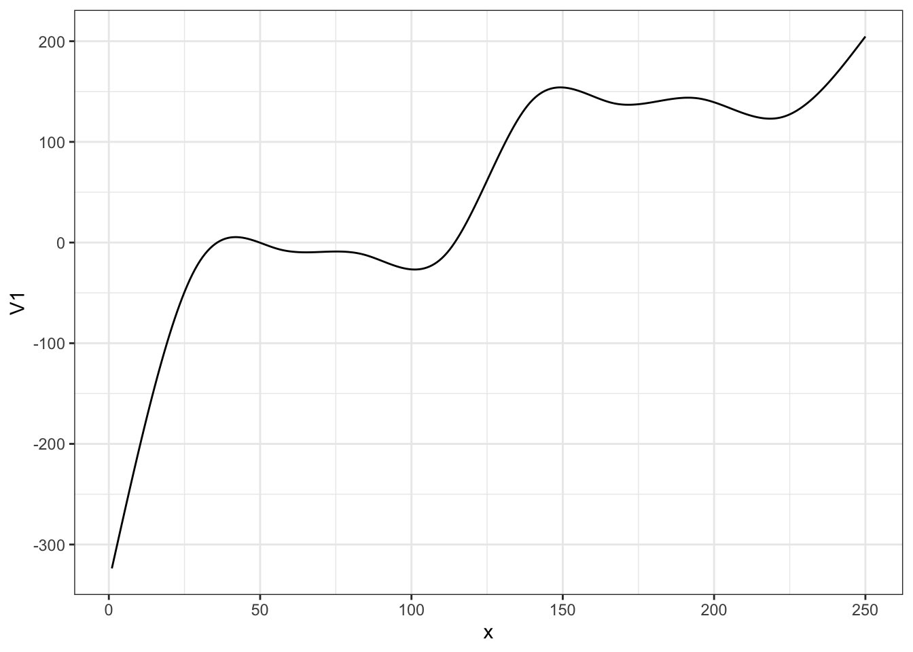
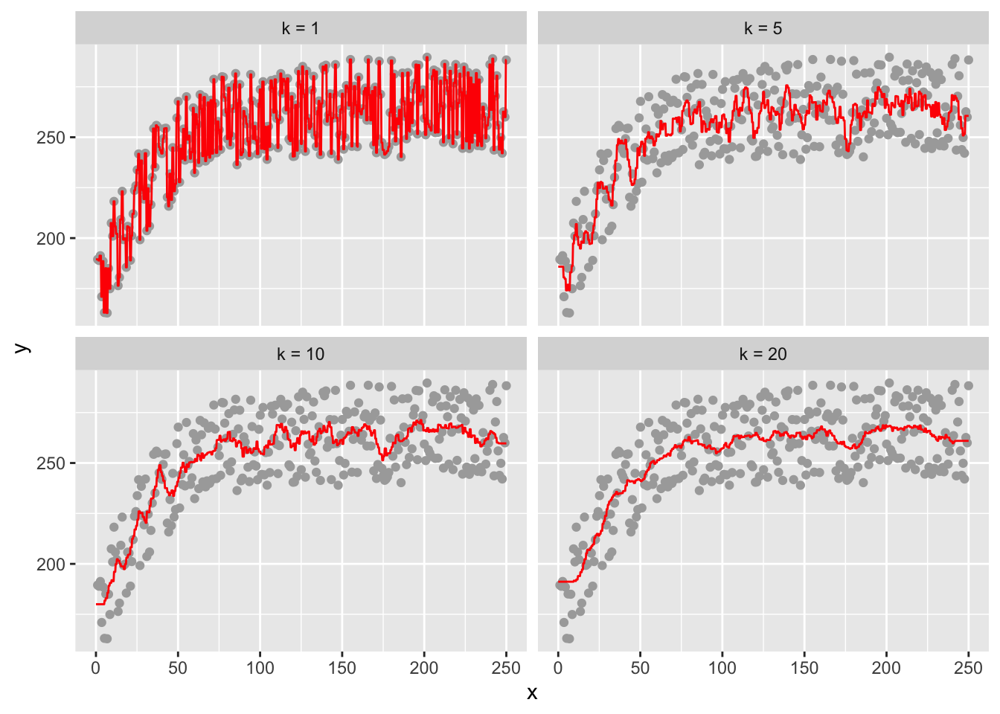

library(data.table)
library(tidyverse)
library(mgcv)
library(parallel)
library(caret)1 Non-linear function estimation
The purpose of this section is to introduce you to the idea of semi-parametric and non-parametric regression methods. We only scratch the surface by just looking at smoothing splines and K-nearest neighbor regression methods. The world of semi-parametric and non-parametric regression is much deeper. But, that’s out of the scope of this section. The primary goal of this section is to familiarize you with the concepts of over-fitting, regularization, hyper-parameters, and parameter tuning using smoothing splines and K-nearest neighbor regression methods as examples.
1.1 Flexible functional form estimation
Packages to load for replications
There is a clear limit to liner (in parameter) parametric models in flexibility to represent quantitative relationships between variables. For example, consider crop yield response to fertilizer. Typically, yield increases at the diminishing rate as fertilizer rate increases. However, at a high enough fertilizer rate, yield stops increasing (fertilizer is not a limiting factor at that point). This relationship is illustrated in the figure below.
set.seed(83944)
#=== generate data ===#
N <- 300 # number of observations
x <- seq(1, 250, length = N)
y_det <- 240 * (1 - 0.4 * exp(- 0.03 * x))
e <- 50 * runif(N) # error
data <- data.table(x = x, y = y_det + e, y_det = y_det)
#=== plot ===#
(
g_base <- ggplot(data) +
geom_line(aes(y = y_det, x = x)) +
theme_bw()
)
Let’s try to fit this data using linear parametric models with \(sqrt(x)\), \(log(x)\), and \(x + x^2\), where the dependent variable is y_det, which is \(E[y|x]\) (no error added).
#=== sqrt ===#
lm_sq <- lm(y_det ~ sqrt(x), data = data)
data[, y_hat_sqrt := lm_sq$fit]
#=== log ===#
lm_log <- lm(y_det ~ log(x), data = data)
data[, y_hat_log := lm_log$fit]
#=== quadratic ===#
lm_quad <- lm(y_det ~ x + x^2, data = data)
data[, y_hat_quad := lm_quad$fit]Code
plot_data <-
melt(data, id.var = "x") %>%
.[variable != "y", ] %>%
.[, fit_case := fcase(
variable == "y_det", "True response",
variable == "y_hat_sqrt", "sqrt",
variable == "y_hat_log", "log",
variable == "y_hat_quad", "quadratic"
)]
ggplot(plot_data) +
geom_line(aes(y = value, x = x, color = fit_case)) +
scale_color_discrete(name = "") +
theme_bw()
None of the specifications do quite well. Indeed, you cannot represent the relationship well using well-known popular functional forms. Let’s now look at methods that are flexible enough to capture the relationship. First, smoothing splines, and then K-nearest neighbor next.
1.2 Smoothing Splines (semi-parametric)
Detailed discussion of smoothing splines is out of the scope of this book. Only its basic ideas will be presented in this chapter. See Wood (2006) for a fuller treatment of this topic.
Consider a simple quantitative relationship of two variables \(y\) and \(x\): \(y = f(x)\).
\[ \begin{aligned} y = f(x) \end{aligned} \]
It is possible to characterize this function by using many functions in additive manner: \(b_1(x), \dots, b_K(x)\).
\[ \begin{aligned} y = \sum_{k=1}^K \beta_k b_k(x) \end{aligned} \]
where \(\beta_k\) is the coefficient on \(b_k(x)\).
Here are what \(b_1(x), \dots, b_K(x)\) may look like (1 intercept and 9 cubic spline functions).
Code
basis_data <-
gam(y_det ~ s(x, k = 10, bs = "cr"), data = data) %>%
predict(., type = "lpmatrix") %>%
data.table() %>%
.[, x := data[, x]] %>%
melt(id.var = "x")
ggplot(data = basis_data) +
geom_line(aes(y = value, x = x)) +
facet_grid(variable ~ .) +
theme_bw()
By assigning different values to \(b_1(x), \dots, b_K(x)\), their summation can represent different functional relationships.
Here is what \(\sum_{k=1}^K \beta_k b_k(x)\) looks like when \(\beta_1\) through \(\beta_{10}\) are all \(200\).
\[ y = \sum_{k=1}^{10} 200 b_k(x) \]
Code
data.table(
variable = unique(basis_data$variable),
coef = rep(200, 10)
) %>%
.[basis_data, on = "variable"] %>%
.[, sum(coef * value), by = x] %>%
ggplot(data = .) +
geom_line(aes(y = V1, x = x)) +
theme_bw()
Here is what \(\sum_{k=1}^K \beta_k b_k(x)\) looks like when \(\beta_1\) through \(\beta_4\) are all \(50\) and \(\beta_5\) through \(\beta_9\) are all \(200\).
\[ y = \sum_{k=1}^5 50 b_k(x) + \sum_{k=6}^{10} 200 b_k(x) \]
Code
data.table(
variable = unique(basis_data$variable),
coef = c(rep(50, 5), rep(200, 5))
) %>%
.[basis_data, on = "variable"] %>%
.[, sum(coef * value), by = x] %>%
ggplot(data = .) +
geom_line(aes(y = V1, x = x)) +
theme_bw()
In practice, we fit the model to a dataset to find coefficient estimates that fit the data well. Here, we use the gam() function from the mgcv package. Note that, we use \(E[y|x]\) (y_det) as the dependent variable to demonstrate the ability of smoothing splines to imitate the true function.
gam stands for Generalized Additive Model. It is a much wider class of model than our examples in this section. See Wood (2006) for more details.
gam_fit <- gam(y_det ~ s(x, k = 10, bs = "cr"), data = data)s(x, k = 10, bs = "cr") in the regression formula tells gam() to use 10 knots, which results in an intercept and nine spline basis functions. bs = "cr" tells gam() to use cubic spline basis functions.
There are many other spline basis options offered by the mgcv package. Interested readers are referred to Wood (2006).
Here are the coefficient estimates:
gam_fit$coefficient(Intercept) s(x).1 s(x).2 s(x).3 s(x).4 s(x).5
227.421061 -1.486636 16.747228 28.309674 32.115070 34.173085
s(x).6 s(x).7 s(x).8 s(x).9
35.178339 34.541380 38.586536 21.979396 This translate into the following fitted curve.
Code
data.table(
variable = unique(basis_data$variable)[-1],
coef = gam_fit$coefficient[-1]
) %>%
.[basis_data, on = "variable"] %>%
.[, .(y_no_int = sum(coef * value)), by = x] %>%
.[, y_hat := gam_fit$coefficient[1] + y_no_int] %>%
ggplot(data = .) +
geom_line(aes(y = y_hat, x = x, color = "gam-fitted")) +
geom_line(data = data, aes(y = y_det, x = x, color = "True")) +
scale_color_manual(
name = "",
values = c("gam-fitted" = "red", "True" = "blue")
) +
ylab("y") +
xlab("x") +
theme_bw()Warning: Removed 300 row(s) containing missing values (geom_path).
As you can see, the trained model is almost perfect in representing the functional relationship of \(y\) and \(x\).
Now, when gam() fits a model to a dataset, it penalizes the wiggliness (how wavy the curve is) of the estimated function to safe-guard against fitting the model too well to the data. Specifically, it finds coefficients that minimizes the sum of the squared residuals (for regression) plus an additional term that captures how wavy the resulting function is.
Here is an example of wiggly (first) v.s. smooth (second) functions.
Code
gam_fit_wiggly <- gam(y ~ s(x, k = 40, bs = "cr", sp = 0), data = data)
plot(gam_fit_wiggly, se = FALSE)
Code
gam_fit_smooth <- gam(y ~ s(x, k = 5, bs = "cr"), data = data)
plot(gam_fit_smooth, se = FALSE)
\[ \begin{aligned} Min_{\hat{f}(x)} \sum_{i=1}^N(y_i - \hat{f}(x_i))^2 + \lambda \Omega(\hat{f}(x)) \end{aligned} \]
where \(\Omega(\hat{f}(x)) > 0\) is a function that captures how wavy the resulting function is. It takes a higher value when \(\hat{f}(x)\) is more wiggly. \(\lambda > 0\) is the penalization parameter. As \(\lambda\) gets larger, a greater penalty on the wiggliness of \(\hat{f}(x)\), thus resulting in a smoother curve.
You can specify \(\lambda\) by sp parameter in gam(). When sp is not specified by the user, gam() finds the optimal value of sp internally using cross-validation (cross-validation will be introduce formally in Chapter 3). For now, just consider it as a method to find parameters that make the trained model a good representation of the underlying conditional mean function (\(E[y|x]\)).
More specifically, it uses generalized cross-validation (GCV). A special type of cross-validation that can be done when the model is linear in parameter.
If you do not pick the value of sp well, the estimated curve will be very wiggly. Let’s see an example by setting the value of sp to 0, meaning no punishment for being very wiggly. We also set the number of splines to \(39\) so that \(\sum_{k=1}^K \beta_k b_k(x)\) is very flexible.
#=== fit ===#
gam_fit_wiggly <- gam(y ~ s(x, k = 40, bs = "cr", sp = 0), data = data)
#=== assign the fitted values to a variable ===#
data[, y_hat := gam_fit_wiggly$fitted.values]
#=== plot ===#
ggplot(data = data) +
geom_line(aes(y = y_hat, x = x)) +
geom_point(aes(y = y, x = x)) +
theme_bw()
We call this phenomenon over-fitting (of the data by the model). An over-fitted model does well in predicting \(y\) when applied to the data the model used to train itself. However, it would do a terrible job in prediction on the data it has never seen clearly because it is not predicting \(E[y|x]\) well.
Important
- Hyper-parameter: parameters that one has freedom to specify before fitting the model and affect the fitting process in ways that change the outcome of the fitting.
- Parameter tuning: process that attempts to find the optimal set of hyper-parameter values.
In mgcv::gam(), the hyper-parameters are the penalty parameter \(\lambda\) (specified by. sp), the number of knots (specified by k)\(^1\), the type of splines (specified by bs). Coefficient estimates (\(\alpha\), \(\beta_1, \dots, \beta_K\)) change when the value of sp is altered. Here is what happens when k \(= 3\) (less flexible than the k \(= 39\) case above).
\(^1\) or more precisely, how many knots and where to place them
#=== fit ===#
gam_fit_wiggly <- gam(y ~ s(x, k = 3, bs = "cr", sp = 0), data = data)
#=== assign the fitted values to a variable ===#
data[, y_hat := gam_fit_wiggly$fitted.values]
#=== plot ===#
ggplot(data = data) +
geom_line(aes(y = y_hat, x = x)) +
geom_point(aes(y = y, x = x)) +
theme_bw()
Hyper-parameters can significantly influence the outcome. Since the user get to pick any numbers, it can be potentially used to twist the results in a way that favors the outcomes they want to have. Therefore, it is important to pick the values of hyper-parameters wisely. One way of achieving the goal is cross-validation, which is a data-driven way of finding the best value of hyper-parameters. We will discuss cross-validation in ?sec-cv in detail.
Here is the fitted curve when the optimal value of sp is picked by gam() automatically given k = 40 and bs = "cr" using cross-validation.
That is, we are not tuning k and bs here. gam() uses generalized cross-validation, which we do not cover in this book.
#=== fit ===#
gam_fit_cv <- gam(y ~ s(x, k = 40, bs = "cr"), data = data)
#=== assign the fitted values to a variable ===#
data[, y_hat := gam_fit_cv$fitted.values]
#=== plot ===#
ggplot(data = data) +
geom_line(aes(y = y_hat, x = x)) +
geom_point(aes(y = y, x = x)) +
theme_bw()
You can see that the tuning of sp is successful and has resulted in a much better fitted curve compared to the case where sp was forced to be 0. As you will see, hyper-parameter tuning will be critical for many of the machine learning methods we will look at later.
1.3 Local Regression
Note
Understanding what local regression helps you understand how generalized random forest works in ?sec-grf.
1.3.1 K-nearest neighbor
The idea of K-nearest neighbor (KNN) regression (a special case of kernel regression with a uniform kernel) is very simple. The prediction of \(y\) conditional on \(x\) is simply the average of \(y\) observed for the K closest (in terms of distance to \(x\)) observations in the data.
Let’s illustrate the method using the data generated in Section 1.1. Suppose you are interested in estimating \(E[y|x = 100]\). Here is a visualization of the 10 closest data points to \(x = 100\). Blue points are the 10-closest observed data points. The red point is the 10-nearest neighbor estimate of \(E[y|x = 100]\).
Code
neighbors <-
copy(data)[, abs_dist_100 := abs(x -100)] %>%
.[order(abs_dist_100), ] %>%
.[1:10, ]
y_estimate <- neighbors[, mean(y)]
ggplot() +
geom_point(data = data, aes(y = y, x = x), color = "darkgray") +
geom_point(data = neighbors, aes(y = y, x = x), color = "blue") +
geom_point(aes(y = y_estimate, x = 100), color = "red") +
geom_line(
data = data.table(y = y_estimate, x = 0:100),
aes(y = y, x = x),
color = "red",
linetype = 2
)
One critical difference between KNN and smoothing splines is that KNN fits data locally while smoothing splines fit the data globally, meaning use all the data to fit a single curve at the same time.
The hyper-parameter for KNN regression is k (the number of neighbors). The choice of the value of \(k\) has a dramatic impacts on the fitted curve.
plot_data <-
data.table(
k = c(1, 5, 10, 20)
) %>%
rowwise() %>%
mutate(knn_fit = list(
knnreg(y ~ x, k = k, data = data)
)) %>%
mutate(eval_data = list(
data.table(x = seq(0, 250, length = 1000)) %>%
.[, y := predict(knn_fit, newdata = .)]
)) %>%
dplyr::select(k, eval_data) %>%
unnest() %>%
mutate(k_txt = paste0("k = ", k)) %>%
mutate(k_txt = factor(k_txt, levels = paste0("k = ", c(1, 5, 10, 20))))Warning: `cols` is now required when using unnest().
Please use `cols = c(eval_data)`ggplot() +
geom_point(data = data, aes(y = y, x = x), color = "darkgray") +
geom_line(data = plot_data, aes(y = y, x = x), color = "red") +
facet_wrap(k_txt ~ ., nrow = 2)
As you can see, at k \(= 1\), the fitted curve fits perfectly with the observed data, and it is highly over-fitted. While increasing k to \(5\) alleviates the over-fitting problem, the fitted curve is still very much wiggly. Nobody uses KNN for any practical applications. However, KNN is great to illustrate the importance of the choice of an arbitrary parameter (hyper-parameter). As discussed above, we will later look at cross-validation as a way to tune hyper-parameters.
1.4 Efficiency: Parametric vs Non-parametric Methods
Semi-parametric and non-parametric approached are more flexible in representing relationships between the dependent and independent variables than linear-in-parameter models. So, why don’t we just use semi-parametric or non-parametric approaches instead for all the econometric tasks? One reason you might prefer linear-in-parameter models has something to do with efficiency.
Tip
- parametric:
- pro: can be efficient than non-parametric approach when the underlying process is modeled well with parametric models
- cons: not robust to functional form mis-specifications
- semi-, non-parametric:
- pro: safe-guard against model mis-specification especially when you are modeling highly complex (non-linear in a way that is hard to capture with parametric models and multi-way interactions of variables)
- cons: possible loss in efficiency compared to parametric approach when the underlying model can be approximated well with parametric models
1.4.1 Monte Carlo Simulation (parametric vs non-parametric)
Consider the following data generating process:
\[ \begin{aligned} y = log(x) + v \end{aligned} \]
Your objective is to understand the impact of treatment (increasing \(x = 1\) to \(x = 2\)). The true impact of the treatment is \(TE[x=1 \rightarrow x=2] = log(2) - log(1) = 0.6931472\).
Code
mc_run <- function(i)
{
print(i) # progress tracker
#=== set the number of observations (not really have to be inside the function..) ===#
N <- 1000
#=== generate the data ===#
x <- 3 * runif(N)
e <- 2 * rnorm(N)
y <- log(x) + e
data <-
data.table(
x = x,
y = y
)
eval_data <- data.table(x = c(1, 2))
#=== linear model with OLS ===#
lm_trained <- lm(y ~ log(x), data = data)
te_lm <- lm_trained$coefficient["log(x)"] * log(2)
#=== gam ===#
gam_trained <- gam(y ~ s(x, k = 5), data = data)
y_hat_gam <- predict(gam_trained, newdata = eval_data)
te_gam <- y_hat_gam[2] - y_hat_gam[1]
#=== KNN ===#
knn_trained <- knnreg(y ~ x, k = 10, data = data)
y_hat_knn <- predict(knn_trained, newdata = eval_data)
te_knn <- y_hat_knn[2] - y_hat_knn[1]
#=== combined the results ===#
return_data <-
data.table(
te = c(te_lm, te_gam, te_knn),
type = c("lm", "gam", "knn")
)
return(return_data)
}
set.seed(5293)
mc_results <-
mclapply(
1:500,
mc_run,
mc.cores = detectCores() * 3 / 4
) %>%
rbindlist()
# lapply(
# 1:100,
# mc_run
# )Figure 1.1 presents the density plots of treatment effect estimates by method. As you can see, the (correctly-specified) linear model performs better than the other methods. All the methods are unbiased, however they differ substantially in terms of efficiency. Note that there was no point in applying random forest at all as there is only a single explanatory variable and the none of the strong points of RF over linear model manifest in this simulation. Clearly, this simulation by no means is intended to claim that linear model is the best. It is merely showcasing a scenario where (correctly-specified) linear model performs far better than the non-parametric models. This is also a reminder that no method works the best all the time. There are many cases where parametric models perform better (contextual knowledge is critical so that your parametric model can represent the true data generating process well). There are of course many cases non-parametric modeling work better than parametric modeling.
Code
ggplot(data = mc_results) +
geom_density(aes(x = te, fill = type), alpha = 0.4) +
geom_vline(xintercept = log(2))
References
Wood, Simon N. 2006. Generalized Additive Models: An Introduction with r. chapman; hall/CRC.